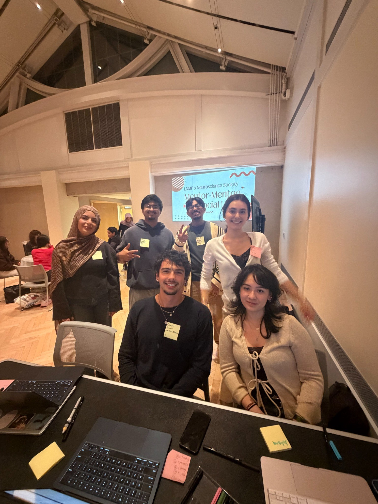
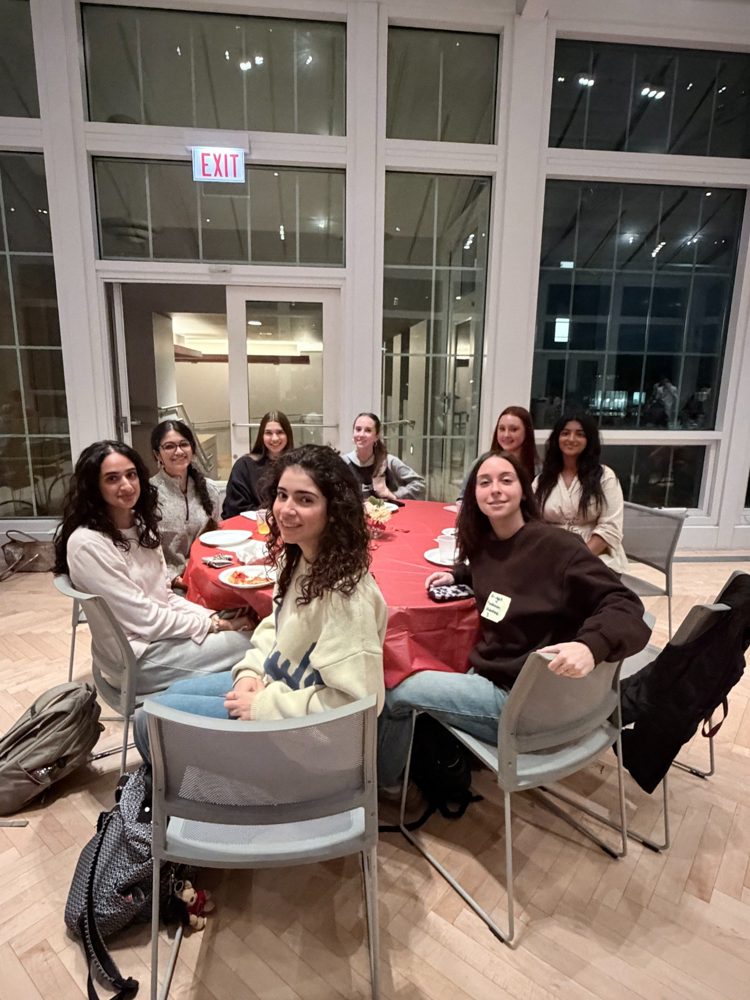
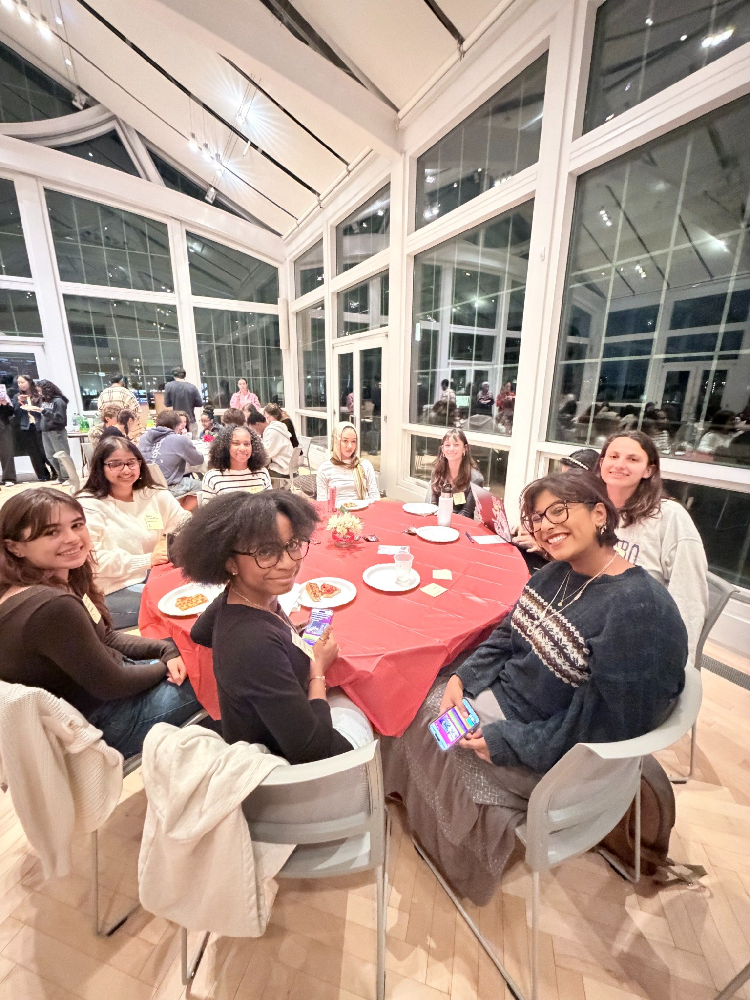
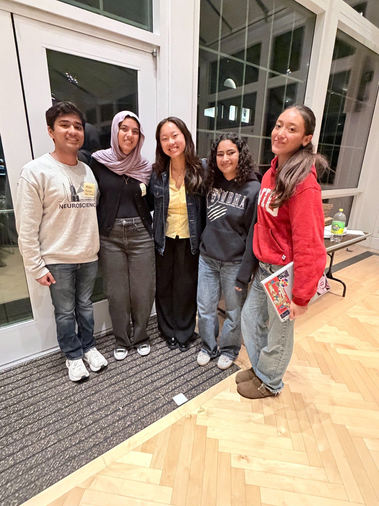
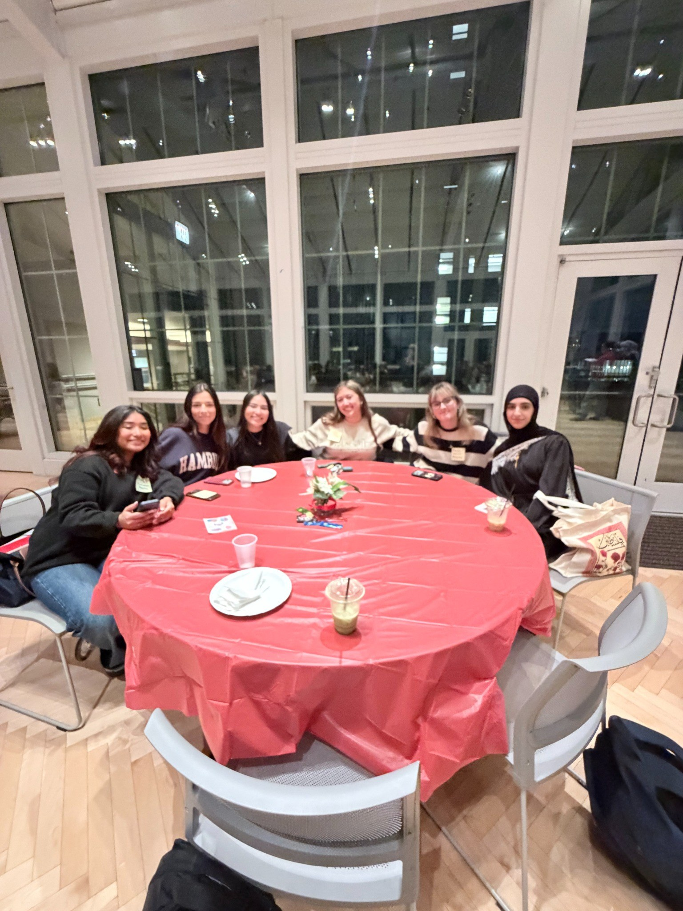

Event Recap One
Mentor-Mentee Social — students connected, shared experiences, and built community.



EVENT RECAPS
A look back at our events, meaningful conversations, and community gatherings.
Mentor-Mentee Social — students connected, shared experiences, and built community.



More highlights from our Mentor-Mentee Social, featuring our students and shared conversations.


WHAT YOU MISSED OUT ON
With nearly 90% of RSVP’d attendees present, our event brought together a large turnout and an energetic, welcoming atmosphere. Mentors and mentees remained enthusiastic, lively, and actively engaged as they connected with new peers and shared their experiences. Conversations explored academic journeys, research opportunities, future goals, and the skills and areas mentors continue to develop. Through meaningful discussions and an engaging atmosphere, mentors helped mentees build connections with fellow neuroscience students and strengthen their sense of community.
PAST EVENTS · CLUB HISTORY
Visit the Event Archive for past recaps, photos, and presentations, organized over time.